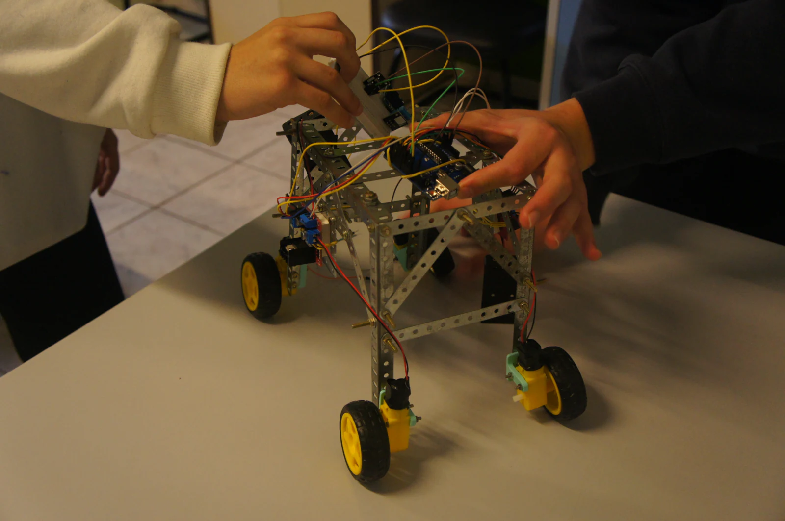

Robótica na escola
Na Robótica, os estudantes montam, programam e ajustam estruturas enquanto aprendem a resolver problemas.
O projeto é uma das atividades apresentadas pelo Colégio Estadual Euzébio da Mota.
Sobre o projeto

Na Robótica, os estudantes montam, programam e ajustam estruturas enquanto aprendem a resolver problemas.
O projeto é uma das atividades apresentadas pelo Colégio Estadual Euzébio da Mota.

Como o projeto acontece
O grupo observa o que aconteceu, testa uma mudança e ajusta a estrutura. Assim, cada tentativa ajuda a decidir o próximo passo.
Participação
As atividades passam por planejamento, montagem, programação e testes. O trabalho é feito em grupo, com orientação da escola.
Quem se interessa por tecnologia, construção e resolução de problemas pode procurar orientação para participar.
Participação orientadaOs dias e horários precisam ser confirmados com a equipe responsável pelo projeto.
Confirme com a escolaA equipe do colégio orienta o uso dos materiais e acompanha as atividades feitas pelo grupo.
Acompanhamento pedagógicoOs protótipos são montados, testados e modificados conforme o grupo encontra problemas ou novas ideias.
Aprendizagem práticaEstamos reunindo mais detalhes sobre o projeto de Robótica. Esta seção será atualizada assim que novas informações forem confirmadas pela equipe do colégio.